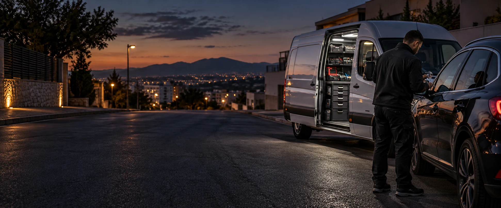

Identificamos el vehículo
Necesitamos marca, modelo, año y ubicación. Indica también si la llave se perdió o fue sustraída.
 CERRAJERÍALIMITED.672 826 060 ↗
CERRAJERÍALIMITED.672 826 060 ↗
PÉRDIDA TOTAL DE LLAVES · ASISTENCIA MÓVIL
Aunque no conserves ninguna copia, podemos valorar la fabricación y programación de una nueva llave. Cuéntanos qué vehículo tienes y dónde estás.
PÉRDIDA TOTAL / NUEVA LLAVE
Perder todas las llaves no significa que debas dar tu coche por perdido. Este servicio combina el acceso al vehículo, la fabricación de una nueva llave y, cuando corresponde, su programación.
El procedimiento depende del sistema de seguridad y del modelo. Antes de desplazarnos, revisamos la información del vehículo y confirmamos qué intervención es posible.
QUÉ SUCEDE DESPUÉS DE TU LLAMADA
Necesitamos marca, modelo, año y ubicación. Indica también si la llave se perdió o fue sustraída.
Ten preparada tu identificación y la documentación que acredite tu relación con el vehículo.
Valoramos fabricación y programación según el sistema. La disponibilidad y los tiempos se confirman para cada caso.
Revisamos apertura, cierre y arranque, según las funciones de la llave y la intervención realizada.
CONSEJO PRÁCTICO
Si el coche está cerrado, evita introducir herramientas en la puerta o manipular la cerradura. Una apertura improvisada puede dañar el mecanismo, el marco o los componentes de la puerta.
Localiza el vehículo, reúne sus datos y llama. Si sospechas un robo de llaves, coméntalo al profesional para valorar las medidas apropiadas para el sistema de tu coche.
Consultar mi casoPÉRDIDA TOTAL
Para este servicio no es necesario conservar una llave. La posibilidad de fabricar y programar una nueva se confirma para tu vehículo.
Hay asistencia móvil. Consulta si tu caso puede resolverse en la ubicación del vehículo y si necesita alguna intervención adicional.
Depende de la ubicación, la disponibilidad y el sistema del vehículo. Al contactar te orientamos sobre tu caso, sin prometer un tiempo único para todos los servicios.
Tu identificación y la documentación del vehículo o autorización correspondiente. El profesional te indicará lo necesario para verificar el servicio.
TU VEHÍCULO NO TIENE POR QUÉ ESPERAR
Atención de urgencias 24 horas.
Consulta disponibilidad para tu ubicación.